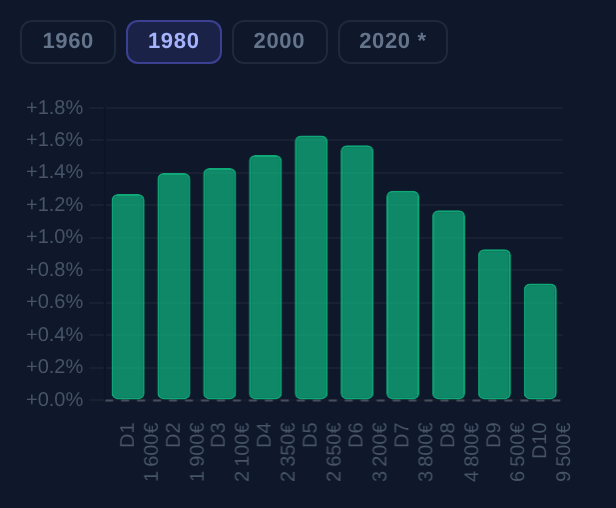

📖 Guide du simulateur
Comprendre le système de retraites français — et les leviers pour l'équilibrer
Vue d'ensemble
Ce simulateur est fondé sur les projections du Conseil d'Orientation des Retraites (COR), l'organisme officiel qui modélise l'avenir financier du système de retraites français. Il vous permet d'explorer ce qui se passerait si on activait différents leviers de réforme : reculer l'âge de départ, modifier les cotisations, changer les règles d'indexation des pensions, etc.
1. Les comptes sont-ils à l'équilibre ? (le système encaisse-t-il autant qu'il dépense ?)
2. Est-ce équitable entre générations et entre niveaux de revenus ? (tout le monde a-t-il un retour proportionnel à ce qu'il a versé ?)
Le solde financier est bien aligné sur le COR. La trajectoire de référence reprend les chiffres publiés par le COR (rapport de juin 2026). Chaque levier, pris seul, reproduit les variantes du COR à environ 0,05 point de PIB près en 2045 et en 2070. Pour comparer des leviers et situer une réforme à l'horizon 2045-2070, c'est une approximation fiable.
Trois limites sur le solde :
- Leviers combinés : le COR teste un levier à la fois ; le simulateur additionne leurs effets. Plus on combine de leviers, moins le résultat est sûr.
- Années 2030 à 2045 pendant une réforme : elles dépendent surtout de la montée en charge, une hypothèse du dossier. Les montants en milliards de 2035 sont des ordres de grandeur, pas des prévisions.
- Pas d'effets sur l'économie : le simulateur ne compte pas l'effet récessif d'une baisse des pensions. Le COR prévient que les ajustements réels devraient être plus forts.
Les résultats par décile sont plus fragiles. Le COR ne publie rien par décile : taux de remplacement et TRI par décile sont reconstitués par le dossier. Les grandes tendances sont solides : le milieu de l'échelle est le mieux servi, les plus hauts salaires le moins bien. Mais sur les profils types du COR, le moteur sous-estime le taux de remplacement de 2 points (non-cadre) à 4-5 points (SMIC), et le TRI du non-cadre de 0,5 point. Cet écart est aussi grand que les différences de TRI entre déciles : le classement fin entre déciles voisins n'est pas fiable.
Le simulateur reprend le scénario central du COR (productivité + 0,7 % par an, chômage 7 % à long terme). Le détail de chaque source et de chaque hypothèse est dans la section Fiabilité des données et des calculs.
Les indicateurs
Le solde mesure la différence entre ce que le système encaisse (cotisations des actifs) et ce qu'il dépense (pensions des retraités). Il est exprimé en pourcentage du PIB.
Pourquoi le PIB ? Parce qu'un déficit de 60 milliards d'euros n'a pas le même poids si la richesse nationale est de 2 000 ou de 4 000 milliards. Le rapport au PIB permet de comparer dans le temps.
Le scénario de référence COR 2026 prévoit un déficit de −2,4 % du PIB en 2070, soit environ 72 milliards d'euros rapportés au PIB de 2025 (2 994 milliards). Le système est actuellement proche de l'équilibre mais se dégrade progressivement avec le vieillissement démographique.
Le taux de remplacement mesure combien un retraité perçoit de pension par rapport à son dernier salaire. Un taux de 70 % signifie qu'une personne qui gagnait 2 000 € net touchera 1 400 € de pension.
Il varie fortement selon les revenus :
Le TRI répond à la question : si je traitais mes cotisations comme un placement financier, quel taux d'intérêt annuel obtiendrais-je ?
Il tient compte de tout : ce qu'on verse pendant sa carrière, l'âge auquel on part, et combien on vit à la retraite.
On reçoit nettement moins
qu'on a versé → 0 %
Équilibre : on récupère
exactement ce qu'on a versé → +2 % ou plus
On reçoit plus
qu'on a versé
Un TRI négatif ne signifie pas forcément que le système est injuste — il peut refléter un effort de solidarité voulu (financer les retraites des autres, couvrir les carrières incomplètes, etc.).
Rapporté à ce qu'ils ont cotisé, tous les déciles reçoivent une pension voisine, sauf les plus hauts salaires. Ce qui fait la différence, c'est surtout la durée de la retraite. D1 vit environ 5 ans de moins que D10, mais la moitié de ses membres a commencé à travailler avant 21 ans et peut partir plus tôt grâce à la retraite anticipée pour carrière longue. D10 vit plus longtemps, mais une partie de ses cotisations, au-dessus du plafond de la Sécurité sociale, n'ouvre pas de droits au régime de base ; entrés tard dans la vie active, une partie attend 67 ans faute d'avoir la durée complète : son rendement est le plus bas. Le milieu de l'échelle (D4 à D8) est le mieux servi.
Les leviers macroéconomiques
Ces leviers agissent directement sur l'équilibre financier du système. Leur effet est progressif : les changements structurels mettent des années à se traduire en flux financiers.
On part au plus tard entre deux dates : l'âge légal, et l'âge auquel on a cotisé la durée requise. Reculer l'âge légal ne retarde donc que ceux qui avaient déjà leur durée, c'est-à-dire surtout ceux qui ont commencé à travailler tôt. Pour les autres, c'est la durée qui décide, et l'âge légal ne change rien.
Il retarde aussi tous ceux qui partent dès l'âge légal sans avoir leur durée : départs avec décote, invalidité, inaptitude. Ils représentent 26 % des départs (Drees, génération 1953).
Le simulateur répartit chaque décile en quatre groupes selon l'âge de fin d'études (Dares, Insee), plus ce groupe qui part à l'âge légal. Il est calé sur deux chiffres du COR : un âge moyen de départ de 64,6 ans pour les générations nées à partir de 1975, et environ 9 % de départs à 67 ans. Un an d'âge légal en plus le recule de 0,5 an et améliore le solde de 0,38 point de PIB en 2070, dans le haut de la fourchette du COR (+0,2 à +0,4 point).
Allonger la durée retarde surtout ceux qui ont commencé tard (études longues) : ils atteignent l'âge légal avant d'avoir leur durée. Une limite : à 67 ans, le taux plein est acquis quelle que soit la durée. Au-delà, la pension est simplement réduite au prorata des années manquantes.
Le COR ne chiffre pas ce levier séparément. Le simulateur le calcule avec la même méthode que l'âge légal : effet sur l'âge moyen de départ, puis 0,8 point de PIB par an d'âge moyen (COR, rapport 2026).
Une réforme ne s'applique jamais d'un coup : l'âge et la durée montent génération par génération. La réforme de 2023 relevait l'âge de 3 mois et la durée d'un trimestre par génération. À ce rythme, passer de 43 à 45 ans de cotisation prend 8 ans.
Ce curseur ne change pas l'effet à long terme : il retarde le moment où il apparaît. Il ne modifie pas non plus le TRI des générations affichées : nées en 1980 ou après, elles partent après la fin de la montée en charge.
Augmenter les cotisations salariales apporte des recettes immédiates au système, mais réduit le salaire net des actifs (moins de pouvoir d'achat). Inversement, les baisser améliore le pouvoir d'achat mais creuse le déficit.
Repère : pour équilibrer le système en 2070 par les seules cotisations, le COR calcule qu'il faudrait 5,6 points de plus.
Contrairement aux cotisations salariales, elles ne réduisent pas directement le salaire net — mais elles augmentent le coût du travail pour l'entreprise, ce qui peut peser sur l'emploi ou les salaires à long terme. L'effet sur le solde est donc amoindri par ces effets indirects.
Le curseur fixe l'écart annuel entre la revalorisation des pensions et l'inflation, en point par an :
- 0 : sur les prix, la règle actuelle ;
- − 2 pt : gel des pensions, avec une inflation de 2 % par an ;
- + 0,7 pt : à peu près sur les salaires (croissance réelle des salaires de 0,7 % par an, COR).
Mécanisme : une sous-indexation ne touche pas la pension au départ, mais la réduit chaque année qui suit. L'effet grandit donc avec l'ancienneté des retraités, puis se stabilise vers 2060, quand tous les retraités sont partis après la mesure.
Calcul : la masse des pensions est répartie selon l'ancienneté de la retraite (tables de mortalité Insee), puis l'écart de revalorisation est appliqué à chaque ancienneté. La variation de la masse est multipliée par le poids des pensions dans le PIB (14,5 % en 2070, COR 2026).
C'est le levier au délai d'action le plus long : un enfant né aujourd'hui n'entrera sur le marché du travail que dans 18 à 22 ans. Son effet sur le solde du système n'est donc visible qu'à partir du milieu des années 2040. C'est un investissement sur la démographie future, pas une solution à court terme.
Mécanisme : les dépenses de retraite ne changent pas avant 2070 (les enfants nés après 2025 ne seront pas encore retraités). Ce qui change, c'est le PIB : plus de naissances, c'est plus d'actifs à partir des années 2040, donc des dépenses plus faibles en part du PIB.
Calcul : le simulateur reprend les deux variantes du COR 2026. Avec 1,7 enfant par femme, le solde 2070 s'améliore de 0,91 point de PIB ; avec 1,2, il se dégrade de 0,98 point. L'écart est nul jusqu'en 2044, puis croît en ligne droite. Le simulateur retient la moyenne, ± 0,95 point en 2070 pour ± 0,25 enfant, et prolonge en ligne droite au-delà de ces deux valeurs.
Les arrivants sont surtout des adultes en âge de travailler : ils augmentent le nombre de cotisants et la richesse nationale bien avant d'ouvrir des droits à la retraite. Selon le COR, l'effet sur le solde est presque nul avant 2030, puis il augmente avec le temps : la population active et le PIB s'écartent de plus en plus du scénario de référence.
Une économie plus productive génère des salaires plus élevés, donc des cotisations plus élevées. C'est la principale variable de long terme : une différence de 0,5 point de croissance de la productivité, maintenue pendant 46 ans, change radicalement la situation du système en 2070. Le scénario COR 2026 retient 0,7 %/an — identique au COR 2025.
Un chômage plus faible signifie plus de personnes qui cotisent. L'effet est rapide (quelques années) mais plafonné : on ne peut pas descendre indéfiniment en dessous du "plein emploi". Le scénario central COR retient 7 % à partir de 2040, contre 7,7 % observé en 2025.
Les leviers d'équité : redistribution par décile
Ces deux curseurs permettent de simuler une redistribution des pensions entre niveaux de revenus, en ciblant un taux de rendement souhaité pour chaque décile. Ce n'est pas un levier macroéconomique au sens strict — c'est un choix de société sur la façon de répartir l'effort.
D1 = les 10 % de salariés les moins bien payés · D5 = revenus médians · D10 = les 10 % les mieux payés.
Les curseurs fixent le rendement souhaité pour D1 et D10 ; les déciles intermédiaires sont interpolés.
TRI D1 relevé : on fixe pour les travailleurs modestes une cible supérieure à leur TRI actuel (environ +0,2 % pour la génération 1980). Cela nécessite de verser un complément de pension — un coût pour le système.
TRI D10 abaissé : on fixe pour les hauts revenus une cible inférieure à leur TRI actuel (environ −0,1 % pour la génération 1980). Leur pension est volontairement réduite — ce qui génère une économie pour le système. C'est un mécanisme de solidarité explicite.
Le coût net (ou l'économie nette) de cette redistribution est affiché dans le simulateur et intégré au solde global.
Sans redistribution, le graphique du simulateur (génération 1980) montre des rendements faibles et proches de zéro : de −0,1 % à +0,4 %. Les plus élevés sont au milieu de l'échelle (D4 à D8) ; le haut de l'échelle (D9, D10) est le moins bien servi.
Pourquoi D1 et D2 ne sont-ils pas mieux servis ? Les travailleurs modestes ont une espérance de vie plus courte (environ 5 ans de moins que D10 à 65 ans, selon l'Insee) : ils touchent leur retraite moins longtemps. Le minimum de pension et les départs anticipés pour carrière longue compensent en partie.
Pourquoi D10 a-t-il le rendement le plus bas ? Au-dessus du plafond de la Sécurité sociale, il paie des cotisations qui n'ouvrent aucun droit au régime de base, et sa pension dépend davantage de l'Agirc-Arrco, moins rentable. Entrés tard dans la vie active, 16 % d'entre eux attendent 67 ans faute d'avoir la durée complète. Son espérance de vie plus longue ne suffit pas à compenser.
Les curseurs d'équité permettent de corriger ces écarts en fixant des cibles de rendement différentes : par exemple, relever le TRI de D1, ou demander un effort plus explicite à D10. Par défaut, les deux curseurs sont placés sur la valeur « réf. » (+0,18 %) : c'est le TRI identique pour tous les déciles qui ne coûte ni ne rapporte rien au système.
Exemple — TRI par décile, génération 1980, scénario de référence (compensation désactivée)

On peut choisir de corriger ces inégalités en jouant sur les curseurs d'équité. Dans l'exemple ci-dessous, le TRI de D1 a été fixé à +0,40 % et celui de D10 à +0,05 %. Le coût global est quasi nul pour le système (+0,1 Md€ par an) : D1 et D10 y gagnent, et ce sont les déciles du milieu (D5 à D8) qui financent, avec un rendement plus bas.
Réglage des curseurs

TRI résultant par décile

Le minimum contributif (893,65 € brut par mois en 2025 avec la majoration) est pris en compte dans le taux de remplacement de référence de D1. En revanche, quand on bouge les curseurs, le simulateur fait varier la pension de D1 en proportion, comme celle des autres déciles, alors qu'un vrai minimum de pension agit comme un plancher. Les variations affichées pour D1 sont donc indicatives.
Comment lire les résultats ?
Le solde en 2070
C'est le chiffre de référence : le déficit (ou excédent) du système en fin de période. Le scénario COR est à −2,4 % du PIB. Tout scénario qui réduit ce chiffre améliore la situation.
Le niveau de vie des retraités en 2070
C'est le niveau de vie moyen des retraités rapporté à celui de l'ensemble de la population. Il était de 100,2 % en 2023 ; le COR prévoit 90,3 % en 2070, parce que les pensions suivent les prix alors que les revenus d'activité suivent la productivité.
Calcul : il dépend surtout de la pension moyenne rapportée au revenu d'activité moyen. D'après les variantes de productivité du COR, 1 % de pension relative en plus donne 0,74 % de niveau de vie relatif en plus. Le simulateur applique ce rapport aux leviers qui changent les pensions : âge légal et durée (pension moyenne des générations 1980 et 2000), indexation (masse des pensions en 2070). Productivité et chômage reprennent directement les variantes du COR. Cotisations, fécondité et solde migratoire n'ont pas d'effet : le COR ne publie rien pour les cotisations et juge l'effet des deux autres « très limité ».
Exemples : pensions revalorisées de 1 point de moins que l'inflation : 83,1 % ; gel des pensions : 76,9 % ; âge légal 65 ans et 45 ans de cotisation : 90,3 %.
Le déficit cumulé 2024–2070
Plus parlant que le seul chiffre de 2070 : c'est l'intégrale du déficit sur toute la période, en % du PIB × années. Il mesure l'effort total à fournir. Le scénario de référence COR correspond à environ −50 points de PIB·années cumulés.
Le message de statut
La banderole en haut du simulateur compare votre scénario au scénario de référence COR. Un score de 100 % signifie que vous avez entièrement résorbé le déficit cumulé. Un score de 50 % signifie que vous en avez éliminé la moitié.
Fiabilité des données et des calculs
Les chiffres du simulateur n'ont pas tous la même solidité. Ils sont classés en trois catégories selon leur origine. L'impact indique ce qu'une erreur sur la donnée changerait :
- Impact fort : touche le solde ou le TRI de presque tous les scénarios ;
- Impact moyen : touche un seul levier ou un seul indicateur ;
- Impact faible : touche l'affichage, ou change le résultat de moins de 0,05 point de PIB.
1. Sources officielles
COR, Insee, Drees, Dares, législation. Utilisées telles quelles.
- Solde de référence 2024–2070Impact fortCOR, rapport 2026 : solde en 2024, 2030, 2038, 2045, 2048, 2050 et 2070. Toute la courbe de référence en dépend.
- Effet de l'âge de départ sur le soldeImpact fortCOR 2026 : 3 ans d'âge moyen de départ en plus améliorent le solde 2070 de 2,4 points de PIB, soit 0,8 point par an. Base des leviers âge légal et durée.
- Règles de calcul des pensionsImpact fortLégislation 2026 : régime général, Agirc-Arrco, minimum contributif, CSG. Base des taux de remplacement et du TRI.
- Salaires par décileImpact fortInsee, salaires du privé en 2024. Base des taux de remplacement et du TRI par décile.
- Espérance de vieImpact fortInsee : à 65 ans par génération, et selon le niveau de vie (2012-2016). Base de la durée de retraite dans le TRI.
- Profils types, taux de remplacement et TRI publiés par le CORImpact fortIls servent à vérifier le moteur de calcul. Reproduits : le profil cadre (taux de remplacement et TRI) et le TRI au SMIC. Écarts non expliqués : taux de remplacement sous-estimé de 2 points pour le non-cadre et de 4 à 5 points au SMIC ; TRI du non-cadre sous-estimé de 0,5 point (voir catégorie 3).
- Variantes de sensibilité du CORImpact moyenSolde migratoire, fécondité, productivité, chômage : chaque levier reprend les écarts publiés pour 2045 et 2070. Lecture sur graphique, précise à ± 0,05 point de PIB environ.
- Assiette des cotisationsImpact moyenCOR 2026 : les revenus d'activité valent 43 % du PIB, donc 1 point de cotisation ≈ 0,43 point de PIB (environ 13 Md€).
- Dépenses de pensionImpact moyenCOR 2026 : 14,1 % du PIB en 2025, 15,3 % en 2070, dont 95 % de pensions. Base du levier indexation.
- Niveau de vie des retraitésImpact moyenCOR 2026 : 90,3 % en 2070, et ses variantes de productivité et de chômage.
- Âges d'entrée dans la vie activeImpact moyenDares (âge de fin d'études selon la catégorie sociale, 2023), Drees (âge moyen de début de carrière), Insee (catégories sociales par décile). Influent sur l'âge de départ et le TRI par décile.
- Part des départs à l'âge légalImpact moyenDrees : 26 % des assurés partent dès l'âge légal, quelle que soit leur durée. Donnée de la génération 1953 (Drees, édition 2025).
- Ratio cotisants / retraitésImpact faibleInsee, Sécurité sociale, COR 2026 (2030 à 2060 lus sur un graphique). Illustration, sans effet sur les calculs.
2. Sources sérieuses non officielles
Travaux d'équipes de recherche ou sites spécialisés, cités par le COR ou reprenant des barèmes officiels.
- Effets des cotisations sur l'économieImpact moyenModèles I-MIP et OFCE présentés au COR en mars 2026 : il reste 93 % de la recette d'une hausse des cotisations salariales et 80 % d'une hausse patronale. Ces résultats n'engagent que les équipes qui les ont produits ; la DG Trésor ne publie pas cette donnée. Une erreur de 10 points sur ces parts change l'effet d'environ 0,04 point de PIB par point de cotisation.
- Barèmes 2026 repris de sites spécialisésImpact faibleTaux de cotisation (Légisocial) et seuils de CSG des retraités (Moneyvox). Ce sont des barèmes officiels, mais recopiés par des sites privés.
- Ratio cotisants / retraités de 1960 à 1990Impact faibleRapport du Sénat de 1997 citant la Sécurité sociale. Illustration seulement.
3. Approximations du dossier
Hypothèses, interpolations et reconstitutions faites pour ce simulateur, quand aucune source ne donne le chiffre. Le détail de chaque calcul est dans les notes du dossier (calibration-leviers.md, calculs-par-decile.md, hypotheses-COR.md).
- Additivité des leviersImpact fortLe COR teste une hypothèse à la fois. Quand plusieurs curseurs bougent, le simulateur additionne leurs effets. Sans effet pour un seul curseur, l'erreur grandit avec le nombre de leviers combinés.
- Effet de l'âge légal et de la duréeImpact fortChacun part dès qu'il a le taux plein ; 26 % de chaque décile part à l'âge légal ; parmi ceux qui ont commencé tard, 70 % ont 2,5 années validées sans emploi, une valeur choisie pour retrouver l'âge moyen de départ (64,6 ans) et la part de départs à 67 ans (9 %) du COR. Vérification : un an d'âge légal en plus donne + 0,38 point de PIB en 2070, dans la fourchette des modèles présentés au COR (+ 0,2 à + 0,4).
- Montée en chargeImpact fortL'effet d'une réforme sur le solde est supposé croître en ligne droite sur 18 ans, le temps que les retraités se renouvellent ; avec une montée en charge, seule une partie des départs suit les nouvelles règles. Forte influence sur le solde des années 2030 à 2045 (exemple Philippe en 2035 : de + 6,7 Md€ à − 8,5 Md€ selon la durée choisie), aucune en 2070.
- TRI par décileImpact fortLe COR ne publie rien par décile. Le dossier reconstitue les carrières de D4 à D9 (mélange des profils non-cadre et cadre), les âges d'entrée par décile et applique les écarts d'espérance de vie des hommes à toutes les générations. Sur les profils types du COR, le moteur trouve un TRI du non-cadre inférieur de 0,5 point à celui du COR, sans explication trouvée.
- Indexation des pensionsImpact moyenCalcul mécanique : répartition des pensions selon l'ancienneté de la retraite (départ à 65 ans, mortalité 2012-2016), inflation de 2 % pour situer le gel, seules les pensions déjà versées sont touchées. Effet probablement un peu sous-estimé en 2070, car la retraite s'allongera.
- Prolongements au-delà des variantes du CORImpact moyenAu-delà des valeurs testées par le COR (par exemple moins de 70 000 ou plus de 230 000 migrants par an, fécondité au-dessus de 1,7), l'effet est prolongé en ligne droite. Les deux variantes du COR (hausse et baisse) sont moyennées.
- Niveau de vie des retraitésImpact moyenLe rapport de 0,74 entre pension relative et niveau de vie relatif vient des variantes de productivité du COR ; le simulateur l'applique aussi à l'âge et à l'indexation. Cotisations, fécondité et migration n'ont pas d'effet. Ne touche que cet indicateur.
- Effets non comptésImpact moyenLe simulateur ne compte pas l'effet sur l'économie d'une baisse des pensions (le COR le juge récessif à court terme), ni les changements de comportement (épargne, report volontaire du départ).
- Évolution entre les années publiéesImpact faibleEntre deux années publiées par le COR, l'écart évolue en ligne droite. Erreur estimée à ± 0,05 point de PIB.
- PIB 2035Impact faibleEstimé à 3 870 Md€ en prolongeant le rythme 2025-2030 du COR (+ 2,6 % par an). Sert seulement à convertir le solde 2035 en milliards d'euros.
- Rémunération moyenne du profil cadreImpact faibleEstimée entre 3 000 et 3 400 € brut par mois, car le COR ne la publie pas en euros. Ne sert qu'à vérifier le moteur sur le profil cadre.
Historique des versions
Version 3 — 6 octobre 2026
Tous les calculs ont été revus pour s'appuyer sur des sources vérifiables, en priorité le rapport du COR de juin 2026.
Nouveaux curseurs
- Âge légal et durée de cotisation sont désormais deux curseurs séparés.
- Montée en charge : choisissez si une réforme s'applique d'un coup ou progressivement, sur 20 ans au plus.
Des leviers plus proches du COR
- Solde migratoire, fécondité, productivité, chômage : leurs effets reprennent maintenant les chiffres du COR. Celui du solde migratoire était auparavant 4 à 5 fois trop faible.
- Cotisations : 1 point de cotisation rapporte environ 13 milliards d'euros par an, contre 3 à 4 auparavant. Une hausse patronale rapporte un peu moins qu'une hausse salariale, car elle pèse davantage sur l'emploi.
- Indexation des pensions : le curseur se règle désormais en écart à l'inflation, du gel des pensions (− 2 points par an) à une indexation proche des salaires (+ 0,7 point). Un gel améliore le solde 2070 de 2,9 points de PIB, contre 0,5 auparavant.
- Niveau de vie des retraités : la référence 2070 passe à 90,3 %, le chiffre du COR.
- Scénario de référence et ratio cotisants / retraités : mis à jour avec le rapport du COR de 2026.
Une équité calculée autrement
- Taux de remplacement par décile : ils sont maintenant calculés avec les règles réelles (régime général, Agirc-Arrco) et les salaires de l'Insee. Pour la génération 1980 : 80 % pour D1, 67 % pour D5, 47 % pour D10. Les valeurs précédentes (82 %, 73 %, 43 %) n'avaient pas de source.
- Âge de début de carrière : il dépend maintenant de la durée des études dans chaque décile. La moitié de D1 a commencé à travailler avant 21 ans, contre un sur dix en D10.
- Départs à l'âge légal : un quart des assurés part dès l'âge légal, même sans avoir toutes ses années de cotisation.
- Départs à 67 ans : parmi ceux qui ont commencé tard, une partie seulement attend 67 ans ; les autres atteignent leur durée plus tôt grâce aux périodes validées sans emploi. Le simulateur reproduit ainsi les chiffres du COR : environ 9 % de départs à 67 ans et un âge moyen de départ de 64,6 ans. Correction publiée le 6 octobre 2026 ; avant, 30 % de la génération partait à 67 ans.
- Rendement (TRI) : il compte toutes les cotisations réellement payées et des pensions qui suivent les prix, et non plus les salaires.
Ce que cela change : les rendements baissent d'environ 1 point. Ce sont désormais les salaires du milieu de l'échelle (D4 à D8) qui sont les mieux servis, et les plus hauts salaires les moins bien. Génération 1980 : D1 passe de +1,38 % à +0,23 %, D10 de +0,53 % à −0,13 %.
Dans ce guide : un avertissement sur les limites du simulateur, une section sur la fiabilité des données et une liste des sources. Les nombres s'affichent au format français.
Version 2 — 1er octobre 2026
Cette version corrige le calcul du rendement (TRI) par décile et par génération.
- Âge de départ : chaque génération part de son propre âge légal (61 ans pour la génération 1960, 65 ans pour 2020), et le curseur les décale toutes ensemble.
- Espérance de vie : elle vient maintenant de l'Insee, par génération et par niveau de vie (5,5 ans d'écart entre D1 et D10 à 65 ans, au lieu de 8 ans estimés).
Ce que cela change : le rendement devient positif pour tous les déciles et baisse d'une génération à l'autre. Les plus hauts salaires sont les moins bien servis.
Version 1 — 23 juin 2026
Première version publiée.
Sources
Les principaux documents utilisés. Les pages et les valeurs précises sont citées dans les notes du dossier (hypotheses-COR.md, calibration-leviers.md, calculs-par-decile.md).
Conseil d'orientation des retraites (COR)
- Rapport annuel, juin 2026 — Évolutions et perspectives des retraites en France. Source principale : scénario de référence, solde, variantes de sensibilité, profils types, taux de remplacement, TRI, niveau de vie, ratio cotisants / retraités.
- Annexe méthodologique en ligne du rapport 2026 — solde année par année, définition des profils types, profils de salaire.
- Rapport annuel, juin 2025 — ancien scénario de référence, affiché pour comparaison.
- Séance du 26 mars 2026, document n° 2 — effets macroéconomiques des leviers d'équilibre (DG Trésor, I-MIP, OFCE).
- Séance du 17 mai 2017, document n° 10 — méthode du taux de rendement interne sur le cas type de non-cadre.
Insee
- Les salaires dans le secteur privé en 2024 (Insee Première n° 2079) — salaires par décile et par catégorie sociale.
- Espérance de vie par génération (Insee Première n° 1927, 2023) — espérance de vie à 65 ans.
- Tables de mortalité par niveau de vie, 2012-2016 — écarts d'espérance de vie entre déciles, répartition des retraités par ancienneté.
- Cotisants, retraités et rapport démographique tous régimes — ratio cotisants / retraités observé.
Drees et Dares
- Drees, Les retraités et les retraites, édition 2025 — âge de début de carrière, minimum de pension, départs à l'âge légal.
- Dares (M. Gouyon, S. Makhzoum), Comment l'âge de sortie des études initiales s'articule-t-il avec le début de carrière professionnelle ?, 9 mai 2023 — âge de fin d'études selon la catégorie sociale.
Autres sources
- Légisocial, taux de cotisations 2026 et Moneyvox, seuils de CSG 2026 — barèmes officiels repris par des sites spécialisés.
- Sénat, rapport n° 73 tome III sur le PLFSS 1998 et Sécurité sociale, ratio de dépendance démographique — ratio cotisants / retraités de 1960 à 1990.
Ce simulateur est un outil pédagogique. Les chiffres sont des ordres de grandeur, pas des prévisions.